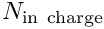
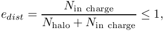

oomph-lib is designed so that, provided the library is compiled with MPI support, discussed below in Basic parallel usage, many of the most computationally-expensive phases of a typical computation are automatically performed in parallel. Examples of "automatically parallelised" tasks include
oomph-lib's block-preconditioning framework which relies heavily on the library's distributed linear algebra infrastructure.The only parallel task that requires user intervention is the distribution of a problem over multiple processors so that each processor stores a subset of the elements. For straightforward problems, a single call to Problem::distribute() suffices. Furthermore, the majority of oomph-lib's multi-physics helper functions ( e.g. the automatic setup of the fluid load on solid elements in FSI problems; the determination of "source elements" in multi-field problems; etc) can be used in distributed problems. For less-straightforward problems, the user may have to intervene in the distribution process and/or be aware of the consequences of the distribution. Hence, the section Distribution of problems by domain decomposition provides an overview of the underlying design used for problem distribution within oomph-lib. A number of demo driver codes for distributed problems are provided and any additional issues are discussed in the accompanying tutorials.
oomph-lib with MPI support you must specify the configure flag oomph-lib's autogen.sh script to build the library you should add this line to the config/configure_options/current file. You should also ensure that appropriate parallel compilers are specified by the CXX, CC, F77 and LD flags. For instance, if you use LAM, you should use CXX=mpic++, CC=mpicc, F77=mpif77 and LD=mpif77. oomph-lib is built with MPI support, the macro OOMPH_HAS_MPI is defined. It is used to isolate parallel sections of code to ensure that the library can be used in serial and parallel: e.g. MPI_Helpers::init(...) and MPI_Helpers::finalize() must be added to the beginning and end of the main(...) function, respectively oomph-lib varies greatly and their performance is also strongly dependent on the underlying hardware, e.g. the speed of your machine's interconnects, etc. mpi.h is included in oomph-lib's generic header, so it is not necessary to include it in the driver code. The functions MPI_Helpers::init(...) and MPI_Helpers::finalize() call their MPI counterparts, MPI_Init(...) and MPI_Finalize(), which must not be called again. Note also that the main(...) function must take arguments which are then passed into the MPI_Helpers::init(...) function. parallel_executable is run on, say, four processors by issuing the command oomph-lib's default linear solver is SuperLUSolver. This is a wrapper to the direct linear solvers from the SuperLU / SuperLU_DIST projects. If oomph-lib is built with MPI support and the executable is run on multiple processors, SuperLU_DIST will be used by default, otherwise SuperLU is used. oomph-lib's own iterative linear solvers, only CG is parallelised. We recommend using oomph-lib's wrapper to the parallel Krylov subspace solvers from the Trilinos library (see the oomph-lib installation page for details on how to install this) instead. The interfaces are identical to those used to call these solvers in serial; see the linear solver tutorial for details. oomph-lib's block preconditioning framework is fully parallelised and can be used in the same way as in a serial code.–with-mpi-self-tests includes oomph-lib's parallel demo driver codes into the self-tests executed when make check is run. The self-tests require the executable to be run on two processors and the command that spawns a two-processor parallel job on the target machine must be specified as an argument to the configure flag. For example, under LAM make test procedure, add the configure flag –with-mpi-self-tests-variablenp to the configure options. Its argument has to specify how to spawn an mpi job on an arbitrary number of processors, using the placeholder OOMPHNP for the number of processors. E.g. config/configure_options/current file before building/installing oomph-lib with autogen.sh. lamboot command, otherwise the self-tests will fail.By default each processor stores the entire Problem object, which means that all data is available on all processors. As a result the size of the problem is limited by the smallest amount of memory available on any of the processors. In addition, the mesh adaptation does not benefit from parallel processing because each processor must adapt its own copy of the entire mesh, even though it operates on a subset of the elements when assembling the Jacobian matrix.
To address this problem, oomph-lib's domain decomposition procedures allow a Problem to be distributed over multiple processors so that each processor holds a fraction of the Problem's elements, which can lead to substantial reductions in memory usage per processor and allows the mesh adaptation to be performed in parallel.
MPI_Helpers::init(...) and MPI_Helpers::finalize(), the function Problem has been constructed and equation numbers have been assigned (i.e. at a point at which Problem::newton_solve() could be called), but before any non-uniform mesh refinement has taken place. Equation numbering is required because the automatic distribution procedure uses the global equation numbering scheme to identify interactions between elements and attempts to store strongly-coupled elements on the same processor. Problem::distribute() each processor holds a sub-set of the Problem's elements: those elements whose contribution to the Jacobian are assembled by the processor, and additional "halo" elements that are retained to facilitate the subsequent mesh adaptation. (Halo elements are discussed in the Overview of the implementation of Problem distribution below). We note that the meshes' boundary lookup schemes are updated during the distribution process so that Mesh::nboundary_element(b) returns the number of elements on the processor that are adjacent to boundary b. Hence, functions that were written (in serial) to update time-dependent boundary conditions on a mesh's boundary nodes, say, continue to work in parallel without requiring any modifications. Problem's elements, it is sensible to modify the post-processing routines such that output files are labelled by the processor number: oomph-lib's mesh-based output functions do not include output from halo elements; this can be re-enabled or disabled by calls to The main task of the Problem::distribute() function is to distribute the Problem's global mesh (possibly comprising multiple sub-meshes) amongst the processors so that (a) the storage requirements on each processor are reduced; (b) during the mesh adaptation each processor only acts on a fraction of the overall mesh; while ensuring that (c) communication between processors required to synchronise any shared data structures is minimised.
The figure below shows a conceptual sketch of the parallelisation strategy adopted. For simplicity, we shall restrict the discussion to the 2D case and ignore various complications that arise with more complicated mesh partitionings.
The initial distribution of a problem proceeds in two stages:
Problem object, using a (typically very coarse) initial mesh; in the figure below, the mesh contains a single four-node quad. Repeated calls to Problem::refine_uniformly() should be made to increase the number of elements sufficiently for a sensible mesh partitioning — for example, there should be at least as many elements as processors. By default, METIS is used to associate each element with a unique processor. Alternatively, user-defined distributions may be specified via a vector that contains the processor number to be associated with each element. Nodes located in the interior of a processor's patch of elements are associated with that processor; nodes shared by elements associated with different processors are associated with the highest-numbered processor. halo'' elements/nodes. Conversely, objects are termedhaloed'' if they are associated with the processor, but they have halo counterparts on other processors. [It is possible to request that all elements in a mesh are retained as halo elements. This is useful in certain free-boundary problems; see the section Distributing problems involving meshes with algebraic node updates below for details]. Aside from the initial refinement process, the functionality described above is implemented in a single function, Problem::distribute(). Following its execution on all processors, each processor can assemble its contribution to the distributed Jacobian matrix and residual vector, required by oomph-lib's parallel linear solvers, using only to locally stored non-halo objects. Once the Newton correction to the unknowns has been computed, each processor updates the unknowns associated with its elements and nodes, before MPI-based communication is employed to update the unknowns stored at the processors' halo nodes.
After a problem has been distributed, further mesh refinement can be performed in parallel using the existing mesh adaptation procedures on the (partial) meshes held on the different processors. For spatially non-uniform refinement, each haloed element communicates whether or not it is to be refined to its halo counterparts before the adaptation takes place. Any nodes created during the refinement are associated with a unique processor, using the rules described above, and halo[ed] nodes are identified and added to the appropriate lookup schemes. These steps are performed automatically when Problem::refine_uniformly() or any of the other mesh adaptation routines within oomph-lib are executed.
Optional pruning of superfluous halo[ed] nodes and elements
The parallel efficiency of the distributed mesh adaptation (in terms of the memory required to hold the partial meshes, and in terms of the CPU time required for their adaptation) is limited by the fact that each processor must adapt not only the  elements it is in charge of, but also its halo elements. We define the efficiency of the problem distribution as

where the equality could only be achieved in the absence of any halo elements.
When the mesh is first distributed, the halo layer has a depth of one element, but repeated mesh refinement can make the halo layers (the original halo elements and their sons) much thicker than a single-element layer. Thus, to a large extent, the efficiency is determined during the initial problem distribution and at that stage of the process it can only be improved by (i) increasing the number of non-distributed initial mesh refinements; (ii) reducing the number of processors. Since both options reduce the parallelism they are not desirable. It is possible, however, to improve the parallel efficiency by pruning superfluous halo[ed] elements after each mesh refinement by calling the function
as illustrated in the figure. If this is done after every mesh adaptation increases significantly as the refinement proceeds. However, the pruning of halo[ed] nodes and elements makes the refinement irreversible and the mesh(es) involved can no longer be unrefined below the previous highest level of uniform refinement.
The procedures described above are completely sufficient for straightforward problems, e.g. a single mesh containing single-physics elements. For less-straightforward problems, e.g. those that involve interactions between multiple meshes, the interactions must be set up both before and after the distribution. The functions
and
can be used to perform any additional commands required to complete the setup of the problem after distribution. In many cases, these functions will contain the same commands as those required in the equivalent Problem::actions_before_adapt() and Problem::actions_after_adapt() functions used during mesh adaptation.
FaceElements are typically used to apply Neumann/traction-type boundary conditions; see the tutorials that discuss the application of such boundary conditions in Poisson or Navier-Stokes equations. Since the FaceElements that apply the Neumann boundary conditions are attached to "bulk" elements that may disappear during mesh adaptation, we generally recommend to store the (pointers to the) FaceElements in a separate mesh, and to use the Problem::actions_before_adapt() and Problem::actions_after_adapt() functions to detach and re-attach the FaceElements to/from the bulk elements before and after the mesh adaptation.
The same issues arise during the problem distribution: A FaceElement that was created before the problem was distributed may have been attached to a bulk element that is deleted when the distribution is performed, resulting in obvious (and disastrous) consequences. We therefore recommend using the functions
and
to detach and re-attach any FaceElements before and after the problem distribution. In this context it is important to note that:
FaceElements should be available before Problem::distribute() is called to allow the load-balancing routines to take their presence into account. FaceElements that are attached to halo (bulk-)elements become halo-elements themselves.Further details are provided in
another tutorial which explains the modifications to the serial driver code required to distribute a Poisson problem with Neumann boundary conditions.
Multi-domain problems involve interactions between PDEs that are defined in different domains, such as fluid-structure interaction problems. Within oomph-lib, multi-domain problems typically involve elements, derived from the ElementWithExternalElement class,
that store pointers to any "external" elements that take part in the interaction. These "external" elements are determined by helper functions such as FSI_functions::setup_fluid_load_info_for_solid_elements(...) or Multi_domain_functions::setup_multi_domain_interactions(...). The appropriate helper functions must be called in the function Problem::actions_after_distribute() to ensure that the interactions are correctly set up once the problem has been distributed.
The helper function Multi_domain_functions::locate_external_elements() has been written to work even after a problem has been distributed and uses the following algorithm:
ElementWithExternalElements and try to locate the "external" elements ( e.g. fluid elements adjacent to an elastic wall in an fluid-structure interaction problem) on the current processor. If the required "external" element is found locally, the ElementWithExternalElement stores a pointer to it. "External" halo[ed] elements are automatically included in any halo/haloed synchronisation operations performed when assigning equation numbers, or updating unknowns during the Newton iteration, etc.
The procedure discussed above has the following important consequence:
FSI_functions::apply_no_slip_on_moving_wall(...) which automatically applies the no-slip condition on moving fluid-solid interfaces). Such functions should therefore be re-assigned to the appropriate nodes after FSI_functions::setup_fluid_load_info_for_solid_elements() has been called. This is exactly equivalent to the sequence of steps required following an adaptive mesh refinement; see e.g. the tutorial discussing the adaptive solution of the collapsible channel problem for a more detailed discussion of this issue. We note that "external" halo-nodes are added to the mesh's boundary lookup schemes, so the specification of auxiliary node update functions for all nodes on a given mesh boundary does not require any further modification to the serial code. oomph-lib provides a variety of algebraic node-update methods. These allow the fast and sparse update of the nodal positions in response to changes in the domain boundaries. The shape and position of such boundaries is typically represented by one or more GeomObjects. If the motion of the boundary is prescribed, (as in the case of the flow inside an oscillating ellipse, say) no modifications are required when the meshes are used in a distributed problem.
In order to minimise communication, the design decision was taken that any GeomObjects defining the position of domain boundaries must be available on all processors after the problem is distributed. Thus, if the GeomObject is actually a MeshAsGeomObject, a compound GeomObject formed from a mesh of FiniteElements, then all the elements in the mesh, or all elements required to construct the mesh, must be retained as halo elements on every processor. This leads to a slight increase in the overall storage requirements (because none of the elements involved in the interaction are deleted when the problem is distributed) but it means that the entire GeomObject remains accessible to the fluid mesh without invoking MPI communications. Two functions can be used to specify that elements must be retained:
keeps every element in the Mesh available to every processor, and
can be called for a particular element to ensure that it is kept available to every processor.
We stress that the increase in storage requirements due to the retention of these elements is minimal because the
elements are only located along the (lower-dimensional) boundaries of the domain. For instance, in the collapsible channel problem the 1D mesh of beam elements bounds the 2D mesh of fluid elements; in Turek and Hron's FSI benchmark problem, the 2D fluid domain is bounded by a 1D mesh of FSISolidTractionElements, and so on.
Examples of the implementation of these ideas are given for the
flow past an elastic leaflet and Turek and Hron's FSI benchmark problem .
oomph-lib mirrors the MPI C bindings with the methods MPI_Helpers::init(...) and MPI_Helpers::finalize(); they call the methods MPI_Init(...) and MPI_Finalize() respectively. In addition, these methods automatically create (and destroy) a new instance of MPI_Comm with the same set of processes as MPI_COMM_WORLD but with a different communication context. This MPI_Comm instance is accessible through MPI_Helpers::Communicator_pt which returns a pointer to an OomphCommunicator object.OomphCommunicator is oomph-lib's object oriented wrapper to an MPI_Comm.OomphCommunicator for any object – this is all handled automatically by oomph-lib. For example, on construction a Problem will use the MPI_Helpers communicator; a LinearSolver will use the corresponding Problem communicator; and a Preconditioner will use the corresponding IterativeLinearSolver communicator.Once a problem has been distributed, the function
can be called to check that the halo lookup schemes for each mesh are set up correctly.
Details about the mesh distribution can be generated by calling
which outputs the elements, nodes, halo(ed) elements, halo(ed) nodes, mesh, boundary elements and boundary nodes on each processor. This routine is automatically called when Problem::distribute() is called with a DocInfo object whose Doc_flag is set to true (the default behaviour).
Parallel code can obviously fail in many more ways than a code that runs on a single processor. Here is a procedure that allows basic parallel debugging without requiring access to expensive commercial tools such as totalview, say. (The instructions below assume that you use LAM as your MPI installation; they can probably be modified to work with other versions of MPI, too).
Let's assume you use gdb as your debugger. To debug a serial code with gdb you would load the executable a.out into the debugger using the command
on the command line. Once inside gdb, you run the code by typing "run". If the code crashes, typing "where" will tell you in which line of the code the crash occurred, and it will also provide a traceback of the function calls that got you to this point.
To do this in parallel, we have to run each (parallel) instance of the code within its own gdb session. To this, create the following three files:
mpidbg that must be executable, which contains: rungdb.sh must be in the same directory as mpidbg and contain the following cmds.gdb file should also be in the same directory and must contain the run command (so that all processors start their gdb session simultaneously), and may also include other commands such as set args command-line-arguments, and so on.Then, to run the debugger in parallel on 3 processors for the executable a.out, the command would be
Once the command is issued, an xterm window will be opened for each processor, and if a crash occurs on any processor, the usual gdb commands (back, up, down, quit and so on) may be used within any of the xterm sessions where a crash has taken place.
A pdf version of this document is available.